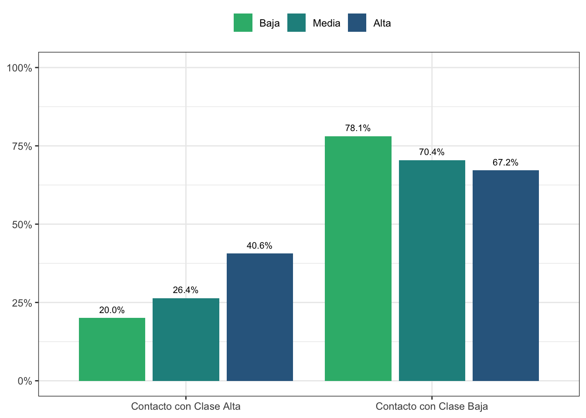
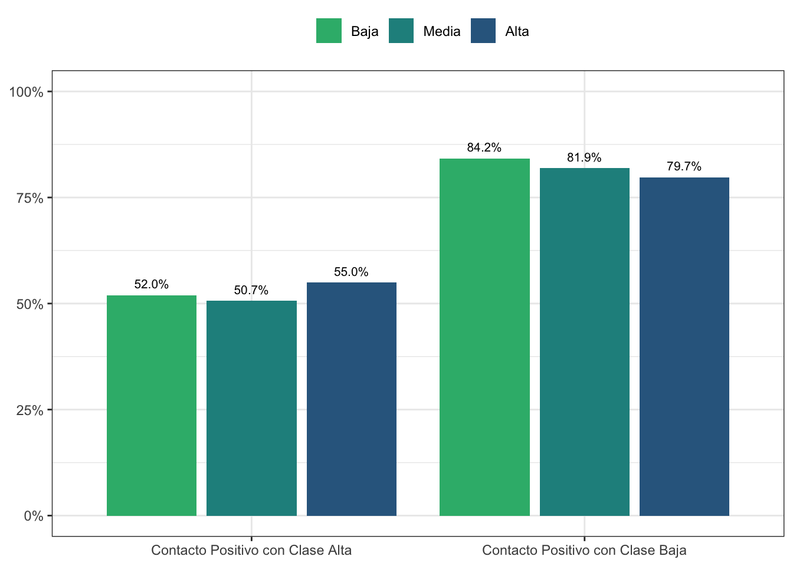
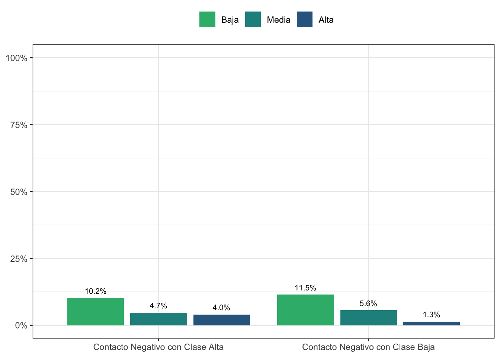
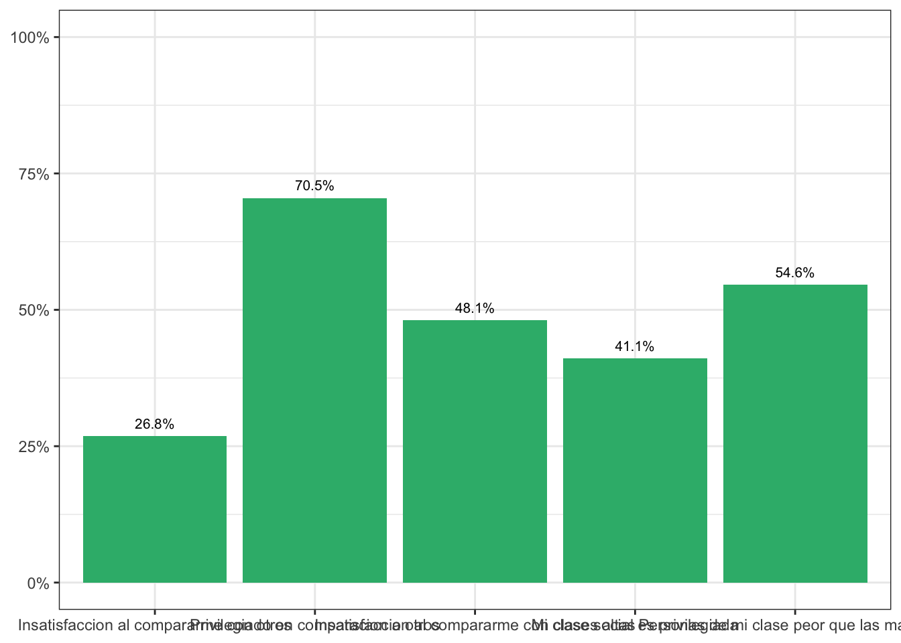

Capítulo 10 Conflicto de Clases y Élites
10.1 Relaciones inter-clases
datos.alta <- data.frame((svytable(~d07_rec + clase.sub + ola, elsoc_diseno, round = F))) %>% group_by(clase.sub, ola) %>% mutate(p_alta=Freq/sum(Freq))
datos.alta$clase.sub <- NULL
datos.alta$ola <- NULL
datos.baja <- data.frame((svytable(~d13_rec + clase.sub + ola, elsoc_diseno, round = F))) %>% group_by(clase.sub, ola) %>% mutate(p_baja=Freq/sum(Freq))
datos.grafico1<- cbind(datos.alta, datos.baja)
subset.grafico <- droplevels(subset(datos.grafico1, datos.grafico1$ola == '2021' &
d07_rec == 'Alto Contacto' & d13_rec == 'Alto Contacto'))
#trasponer según variable
datos.grafico <- subset.grafico %>%
pivot_longer(cols = starts_with('d')) %>%
mutate(variable = factor(name, labels = c('Contacto con Clase Alta', 'Contacto con Clase Baja'))) %>%
drop_na()
datos.grafico$porcentaje <- with(datos.grafico, case_when(
variable == 'Contacto con Clase Alta' ~ p_alta,
variable == 'Contacto con Clase Baja' ~ p_baja))
#graficamos
gr.09.1 <-datos.grafico %>%
ggplot(aes(y = porcentaje, x = variable, fill = clase.sub,
label = as.character(scales::percent(porcentaje, accuracy = .1)))) +
theme_bw() +
geom_col(position = "dodge2") +
scale_y_continuous(labels = scales::percent,
limits = c(0, 1)) +
ylab(label = NULL) +
xlab(label = NULL) +
scale_fill_viridis_d(begin = .33, end = .66, direction = -1, option = 'viridis') +
geom_text(vjust = -0.8,
position = position_dodge(width = .9),
size= 2.75) +
theme(legend.position = 'top',
legend.title = element_blank())
gr.09.1

Figura 10.1: Frecuencia de contacto con clase alta y clase baja, según clase social subjetiva del entrevistado (2021)
datos.alta <- data.frame((svytable(~d08_rec + clase.sub + ola, elsoc_diseno, round = F))) %>% group_by(clase.sub, ola) %>% mutate(p_alta=Freq/sum(Freq))
datos.alta$clase.sub <- NULL
datos.alta$ola <- NULL
datos.baja <- data.frame((svytable(~d14_rec + clase.sub + ola, elsoc_diseno, round = F))) %>% group_by(clase.sub, ola) %>% mutate(p_baja=Freq/sum(Freq))
datos.grafico1<- cbind(datos.alta, datos.baja)
subset.grafico <- droplevels(subset(datos.grafico1, datos.grafico1$ola == '2021' &
d08_rec == 'Alto Contacto Positivo' & d14_rec == 'Alto Contacto Positivo'))
#trasponer según variable
datos.grafico <- subset.grafico %>%
pivot_longer(cols = starts_with('d')) %>%
mutate(variable = factor(name, labels = c('Contacto Positivo con Clase Alta', 'Contacto Positivo con Clase Baja'))) %>%
drop_na()
datos.grafico$porcentaje <- with(datos.grafico, case_when(
variable == 'Contacto Positivo con Clase Alta' ~ p_alta,
variable == 'Contacto Positivo con Clase Baja' ~ p_baja))
#graficamos
gr.09.2 <-datos.grafico %>%
ggplot(aes(y = porcentaje, x = variable, fill = clase.sub,
label = as.character(scales::percent(porcentaje, accuracy = .1)))) +
theme_bw() +
geom_col(position = "dodge2") +
scale_y_continuous(labels = scales::percent,
limits = c(0, 1)) +
ylab(label = NULL) +
xlab(label = NULL) +
scale_fill_viridis_d(begin = .33, end = .66, direction = -1, option = 'viridis') +
geom_text(vjust = -0.8,
position = position_dodge(width = .9),
size= 2.75) +
theme(legend.position = 'top',
legend.title = element_blank())
gr.09.2

Figura 10.2: Contacto positivo con personas de clase alta y clase baja, según clase social subjetiva del entrevistado (2021)
datos.alta <- data.frame((svytable(~d09_rec + clase.sub + ola, elsoc_diseno, round = F))) %>% group_by(clase.sub, ola) %>% mutate(p_alta=Freq/sum(Freq))
datos.alta$clase.sub <- NULL
datos.alta$ola <- NULL
datos.baja <- data.frame((svytable(~d15_rec + clase.sub + ola, elsoc_diseno, round = F))) %>% group_by(clase.sub, ola) %>% mutate(p_baja=Freq/sum(Freq))
datos.grafico1<- cbind(datos.alta, datos.baja)
subset.grafico <- droplevels(subset(datos.grafico1, datos.grafico1$ola == '2021' &
d09_rec == 'Alto Contacto Negativo' & d15_rec == 'Alto Contacto Negativo'))
#trasponer según variable
datos.grafico <- subset.grafico %>%
pivot_longer(cols = starts_with('d')) %>%
mutate(variable = factor(name, labels = c('Contacto Negativo con Clase Alta', 'Contacto Negativo con Clase Baja'))) %>%
drop_na()
datos.grafico$porcentaje <- with(datos.grafico, case_when(
variable == 'Contacto Negativo con Clase Alta' ~ p_alta,
variable == 'Contacto Negativo con Clase Baja' ~ p_baja))
#graficamos
gr.09.3 <-datos.grafico %>%
ggplot(aes(y = porcentaje, x = variable, fill = clase.sub,
label = as.character(scales::percent(porcentaje, accuracy = .1)))) +
theme_bw() +
geom_col(position = "dodge2") +
scale_y_continuous(labels = scales::percent,
limits = c(0, 1)) +
ylab(label = NULL) +
xlab(label = NULL) +
scale_fill_viridis_d(begin = .33, end = .66, direction = -1, option = 'viridis') +
geom_text(vjust = -0.8,
position = position_dodge(width = .9),
size= 2.75) +
theme(legend.position = 'top',
legend.title = element_blank())
gr.09.3

Figura 10.3: Contacto negativo con personas de clase alta y clase baja, según clase social subjetiva del entrevistado (2021)
10.2 Deprivación Relativa
datos.01 <- data.frame((svytable(~d27_01_rec+ ola, elsoc_diseno_2, round = F))) %>% group_by(ola) %>% mutate(p_01=Freq/sum(Freq))
datos.01$ola <- NULL
datos.02 <- data.frame((svytable(~d27_02_rec+ ola, elsoc_diseno_2, round = F))) %>% group_by(ola) %>% mutate(p_02=Freq/sum(Freq))
datos.02$ola <- NULL
datos.03 <- data.frame((svytable(~d27_03_rec+ ola, elsoc_diseno_2, round = F))) %>% group_by(ola) %>% mutate(p_03=Freq/sum(Freq))
datos.03$ola <- NULL
datos.04 <- data.frame((svytable(~d27_04_rec+ ola, elsoc_diseno_2, round = F))) %>% group_by(ola) %>% mutate(p_04=Freq/sum(Freq))
datos.04$ola <- NULL
datos.05 <- data.frame((svytable(~d27_05_rec+ ola, elsoc_diseno_2, round = F))) %>% group_by(ola) %>% mutate(p_05=Freq/sum(Freq))
datos.grafico1<- cbind(datos.01, datos.02, datos.03, datos.04, datos.05)
subset.grafico <- droplevels(subset(datos.grafico1, datos.grafico1$ola == '2021' &
d27_01_rec == 'De Acuerdo' &
d27_02_rec == 'De Acuerdo' &
d27_03_rec == 'De Acuerdo' &
d27_04_rec == 'De Acuerdo' &
d27_05_rec == 'De Acuerdo'))
#trasponer según variable
datos.grafico <- subset.grafico %>%
pivot_longer(cols = starts_with('d27')) %>%
mutate(variable = factor(name, labels = c("Insatisfaccion al compararme con otros",
"Privilegiado en comparacion a otros",
"Insatisfaccion al compararme con clases altas",
"Mi clase social es privilegiada",
"Personas de mi clase peor que las mas altas"))) %>%
drop_na()
datos.grafico$porcentaje <- with(datos.grafico, case_when(
variable == 'Insatisfaccion al compararme con otros' ~ p_01,
variable == 'Privilegiado en comparacion a otros' ~ p_02,
variable == 'Insatisfaccion al compararme con clases altas' ~ p_03,
variable == 'Mi clase social es privilegiada' ~ p_04,
variable == 'Personas de mi clase peor que las mas altas' ~ p_05))
#graficamos
gr.09.5 <-datos.grafico %>%
ggplot(aes(y = porcentaje, x = variable, fill = value,
label = as.character(scales::percent(porcentaje, accuracy = .1)))) +
theme_bw() +
geom_col(position = "dodge2", show.legend = FALSE) +
scale_y_continuous(labels = scales::percent,
limits = c(0, 1)) +
ylab(label = NULL) +
xlab(label = NULL) +
scale_fill_viridis_d(begin = .33, end = .66, direction = -1, option = 'viridis') +
geom_text(vjust = -0.8,
position = position_dodge(width = .9),
size= 2.75)
gr.09.5

Figura 10.5: Grado de deprivación Relativa según las siguientes categorías (2021) Suma de Respuestas “De acuerdo” y ”Totalmente de acuerdo"